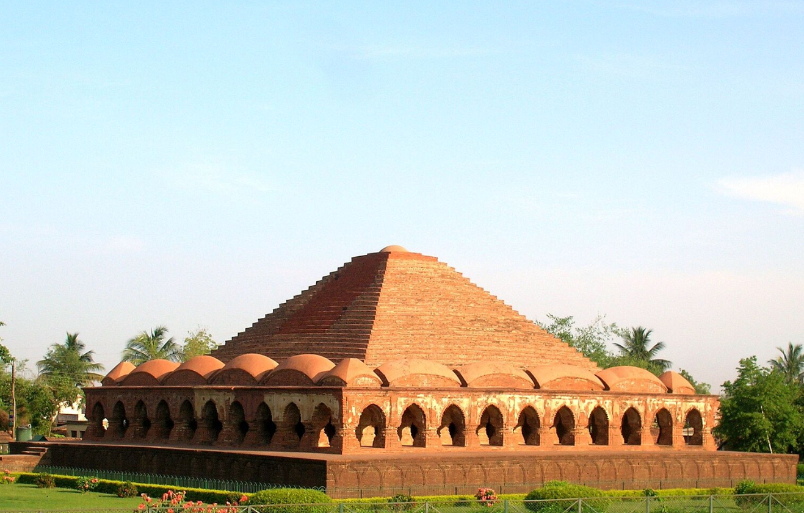
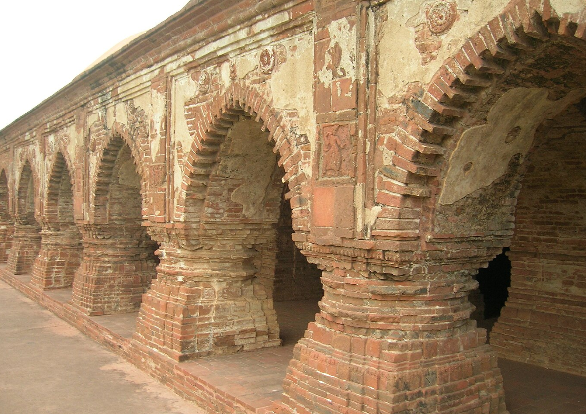

The Rasmancha is the oldest brick temple, built in 1600 by King Bir Hambir. It has an unusual elongated pyramidal tower, surrounded by hut-shaped turrets typical of Bengali roof structures of the time. It was used to display idols of Radha-Krishna during the Ras festival.
View on Google Maps